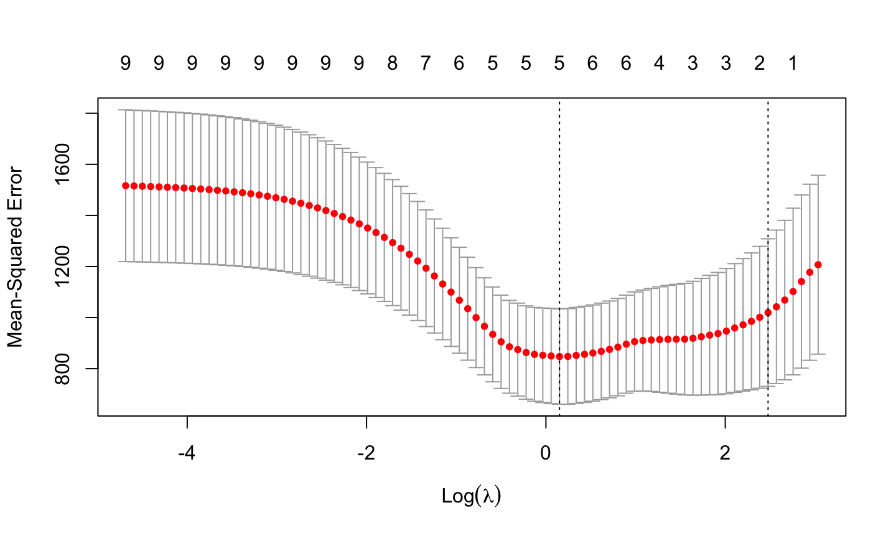
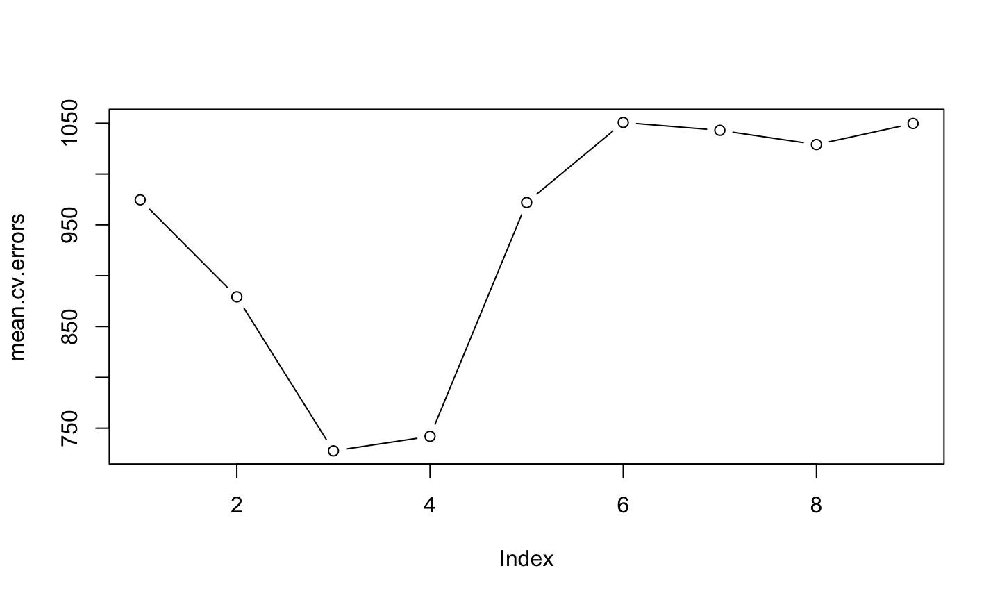

Variable selection
Peter Geelan-Small, Stats Central
13/08/2020
Statistical inference - main types of inference
Parameter estimation - finding a plausible range of values for a parameter of interest - e.g. coefficient of a particular predictor
Hypothesis testing - looking at the effect of a focal predictor - testing if the coefficient of the predictor is zero
Predicting future values of the response from predictors
Finding which predictors are associated with the response - active predictors versus inactive predictors
A good predictive model aids parameter estimation and hypothesis testing
Variable selection is a type of inference - one of many methods in general area of model selection
Example: Respiratory muscle strength in cystic fibrosis
Measurements of a number of clinical variables were taken on 25 patients with cystic fibrosis aged from 7 to 23 years. The response variable is maximum expiratory pressure (pemax).
What variables are associated with (active predictors of)
pemax?What is a useful prediction model for
pemax?
Response
pemax: maximum expiratory pressure
Example: Cystic fibrosis
age: age (yr)sex: coded 0: male, 1:femaleheight: height (cm)weight: weight (kg)bmp: body mass pc. (% of normal) - indicator of malnutrition
Lung function indicators
fev1: forced expiratory volumerv: residual volumefrc: functional residual capacitytlc: total lung capacity
Example: Cystic fibrosis - variables
## 'data.frame': 25 obs. of 10 variables:
## $ age : int 7 7 8 8 8 9 11 12 12 13 ...
## $ sex : int 0 1 0 1 0 0 1 1 0 1 ...
## $ height: int 109 112 124 125 127 130 139 150 146 155 ...
## $ weight: num 13.1 12.9 14.1 16.2 21.5 17.5 30.7 28.4 25.1 31.5 ...
## $ bmp : int 68 65 64 67 93 68 89 69 67 68 ...
## $ fev1 : int 32 19 22 41 52 44 28 18 24 23 ...
## $ rv : int 258 449 441 234 202 308 305 369 312 413 ...
## $ frc : int 183 245 268 146 131 155 179 198 194 225 ...
## $ tlc : int 137 134 147 124 104 118 119 103 128 136 ...
## $ pemax : int 95 85 100 85 95 80 65 110 70 95 ...Example: Cystic fibrosis - all pairs plot

Example: Cystic fibrosis - summary statistics
## mean sd IQR 50% n
## age 14.480 5.0589854 6 14.0 25
## sex 0.440 0.5066228 1 0.0 25
## height 152.800 21.5000000 35 156.0 25
## weight 38.404 17.8981256 26 37.2 25
## bmp 78.280 12.0052766 22 71.0 25
## fev1 34.720 11.1971723 18 33.0 25
## rv 255.200 86.0169557 117 225.0 25
## frc 155.400 43.7187984 56 139.0 25
## tlc 114.000 16.9681073 27 113.0 25
## pemax 109.120 33.4369058 45 95.0 25Example: Cystic fibrosis - correlations
## age sex height weight bmp fev1 rv frc tlc pemax
## age 1.00 -0.17 0.93 0.91 0.38 0.29 -0.55 -0.64 -0.47 0.61
## sex -0.17 1.00 -0.17 -0.19 -0.14 -0.53 0.27 0.18 0.02 -0.29
## height 0.93 -0.17 1.00 0.92 0.44 0.32 -0.57 -0.62 -0.46 0.60
## weight 0.91 -0.19 0.92 1.00 0.67 0.45 -0.62 -0.62 -0.42 0.64
## bmp 0.38 -0.14 0.44 0.67 1.00 0.55 -0.58 -0.43 -0.36 0.23
## fev1 0.29 -0.53 0.32 0.45 0.55 1.00 -0.67 -0.67 -0.44 0.45
## rv -0.55 0.27 -0.57 -0.62 -0.58 -0.67 1.00 0.91 0.59 -0.32
## frc -0.64 0.18 -0.62 -0.62 -0.43 -0.67 0.91 1.00 0.70 -0.42
## tlc -0.47 0.02 -0.46 -0.42 -0.36 -0.44 0.59 0.70 1.00 -0.18
## pemax 0.61 -0.29 0.60 0.64 0.23 0.45 -0.32 -0.42 -0.18 1.00Example: Cystic fibrosis - regression model
Model: multivariable linear regression
## Estimate Std. Error t value Pr(>|t|)
## (Intercept) 176.0582 225.8912 0.7794 0.4479
## age -2.5420 4.8017 -0.5294 0.6043
## sex -3.7368 15.4598 -0.2417 0.8123
## height -0.4463 0.9034 -0.4940 0.6285
## weight 2.9928 2.0080 1.4905 0.1568
## bmp -1.7449 1.1552 -1.5105 0.1517
## fev1 1.0807 1.0809 0.9998 0.3333
## rv 0.1970 0.1962 1.0039 0.3314
## frc -0.3084 0.4924 -0.6264 0.5405
## tlc 0.1886 0.4997 0.3774 0.7112## [1] Adjusted R-sq = 0.4197 p value = 0.032Example: Cystic fibrosis - collinearity
Global P value small, no P values for model coefficients small?
Correlations among variables are interfering with estimated standard errors - collinearity
Check via variance inflation factor
## age sex height weight bmp fev1 rv frc tlc
## 21.830 2.269 13.955 47.781 7.116 5.420 10.538 17.143 2.660Values of VIF > 10 show concerning collinearity
VIF values show why individual P values are not smaller
Example: Cystic fibrosis - model assumptions
Check model assumptions

## [1] 21 24Variable selection - criteria and methods
Criteria applied to a model (well or not!) for deciding the fate of a variable:
P value derived from some statistic (\(t\), \(\;F\), \(\;\chi^2\))
measure of model fit - mean squared error (residual mean square), adjusted \(R^2\)
information criterion - AIC, BIC (combination of measure of model fit and penalty for larger model)
For these criteria, smaller is better, except for adjusted \(R^2\), where larger is better
Variable selection - criteria and methods
Methods
- stepwise methods - forwards, backwards, both (1960)
- one variable added or removed at each step
- validation methods
- measure how well models predict using new data (1990s)
- randomly split data set into training and test sets
- all subsets combined with k-fold cross-validation
- penalised estimation methods - model coefficient estimates forced towards zero
- penalty term is based on magnitude of model coefficients
- LASSO (1996)
Variable selection - criteria and methods
Consensus view is use expert knowledge first to simplify your model
- eliminate unnecessary predictors
Stepwise methods - can be useful but strongly criticised by some
- no statistical justification but if you must …
- do not use P values for decisions
- hypothesis testing not appropriate for model selection as no a priori hypothesis is tested
- multiple testing problems
- use information criterion (AIC, BIC)
Variable selection - criteria and methods
Validation methods
- common criterion is mean squared error
- good for comparing predictive capability of models and so variable selection
- choose appropriate “k” for k-fold cross-validation - one recommendation:
- leave-one-out (i.e. N-fold c.v.) if n < 20
- 10-fold c.v. for 20<n<100
- 5-fold c.v. for n>100
Penalised estimation methods (e.g. LASSO)
- main goal is predictive capability of model
- good when many parameters or small sample
Variable selection - criteria and methods
Each method also has its limitations and disadvantages
- Stepwise methods
- can be undermined by collinearity
- validity of multiple steps is questionable
- AIC and BIC rely on model being close to correct
- Cross-validation requires only independent splits for training and test data but different results for different “k”
- LASSO estimates are biased and no standard errors are available
Example: Cystic fibrosis - active predictors
- What variables are associated with (active predictors of)
pemax?
LASSO

Example: Cystic fibrosis - active predictors
## 9 x 1 sparse Matrix of class "dgCMatrix"
## s0
## age .
## sex .
## height .
## weight 1.57131610
## bmp -1.14686453
## fev1 1.29784065
## rv 0.07231485
## frc .
## tlc 0.15479400Available output:
- active predictors and model coefficients
- no P values
- no standard errors
Example: Cystic fibrosis - prediction model
- What is a useful prediction model for
pemax?
k-fold cross validation (k = 1, leave-one-out) with all subsets in each fold
## folds
## 1 2 3 4 5 6 7 8 9 10 11 12 13 14 15 16 17 18 19 20 21 22 23
## 1 1 1 1 1 1 1 1 1 1 1 1 1 1 1 1 1 1 1 1 1 1 1
## 24 25
## 1 1## 1 2 3 4 5 6 7
## 974.6263 879.2297 727.7373 742.0240 972.0102 1050.7182 1043.0226
## 8 9
## 1029.0064 1049.6921## [1] No. of predictors in final model = 3Example: Cystic fibrosis - prediction model

Example: Cystic fibrosis - prediction model
## (Intercept) weight bmp fev1
## 126.333557 1.536475 -1.465406 1.108629Look at terms in 4-predictor model from c.v. runs
## (Intercept) weight bmp fev1 rv
## 63.9466933 1.7489143 -1.3772433 1.5476984 0.1257152Strange:
both weight and bmp are in model when cor(weight, bmp) = 0.67
coef of bmp is negative when cor(pemax, bmp) = 0.23
Possible overfitting?
Example: Cystic fibrosis - prediction model
Optimal model from cross-validation with all subsets fitted on full data set
## Estimate Std. Error t value Pr(>|t|)
## (Intercept) 126.3336 34.7199 3.6387 0.0015
## weight 1.5365 0.3644 4.2162 0.0004
## bmp -1.4654 0.5793 -2.5297 0.0195
## fev1 1.1086 0.5144 2.1553 0.0429## [1] Adjusted R-sq = 0.5086 p value = 4e-04Example: Cystic fibrosis - prediction model
For prediction models:
some overfitting is not a problem
some collinearity is not a problem
Example: Cystic fibrosis - active predictors
Simplify the model
- use logic from expert knowledge - consider groups of predictors
Lung function: fev1, rv, frc, tlc
Remove these other lung function indicators as a group
Model comparison criteria:
AIC - overfits, better for prediction model
BIC - penalises larger models harder, good for active predictors
As models are nested, can use an \(F\) test
Example: Cystic fibrosis - active predictors
Simplify the model contd
## [1] AIC full model: 242.05## [1] AIC reduced model: 239.56## [1] AIC_full - AIC_red = 2.49## [1] BIC full model: 255.46## [1] BIC reduced model: 248.09## [1] BIC_full - BIC_red = 7.37Model without lung function variables appears better
Example: Cystic fibrosis - active predictors
Simplify the model contd
\(F\) test for nested models
## Analysis of Variance Table
##
## Model 1: pemax ~ age + sex + height + weight + bmp + fev1 + rv + frc +
## tlc
## Model 2: pemax ~ age + sex + height + weight + bmp
## Res.Df RSS Df Sum of Sq F Pr(>F)
## 1 15 9731.2
## 2 19 12129.2 -4 -2398 0.9241 0.4758Smaller model is no worse than larger model
Example: Cystic fibrosis - active predictors
## Estimate Std. Error t value Pr(>|t|)
## (Intercept) 280.4482 124.9556 2.2444 0.0369
## age -3.0750 3.6352 -0.8459 0.4081
## sex -11.5281 10.3720 -1.1115 0.2802
## height -0.6853 0.7962 -0.8607 0.4001
## weight 3.5546 1.5281 2.3261 0.0312
## bmp -1.9613 0.9263 -2.1174 0.0476## [1] Adjusted R-sq = 0.429 p value = 0.0064Collinearity still present - possibly obscuring relationships
## age sex height weight bmp
## 12.715251 1.038066 11.015970 28.123150 4.648941Example: Cystic fibrosis - active predictors
Simplify the model contd
Remove age
## Estimate Std. Error t value Pr(>|t|)
## (Intercept) 251.3973 119.2859 2.1075 0.0479
## sex -11.5458 10.2979 -1.1212 0.2755
## height -0.8128 0.7762 -1.0472 0.3075
## weight 2.6947 1.1329 2.3787 0.0275
## bmp -1.4881 0.7330 -2.0302 0.0558## [1] Adjusted R-sq = 0.4371 p value = 0.0033Collinearity still present
## sex height weight bmp
## 1.038062 10.620847 15.678850 2.953131Example: Cystic fibrosis - active predictors
Perhaps no neat ending here in specifying active predictors
- cor(height, weight) = 0.92 so possibly one should have been removed at the start
Different methods may lead to different results
Inference after model selection - Caveats
Full fitted model is only model giving accurate standard errors and P values
Data-driven model selection, esp. stepwise methods, produce estimated standard errors of coefficients and P values that are too small
Most parsimonious model may not give best parameter estimates or predictions
Variable selection - Recommendations
In study design, use expert knowledge to list predictors (do not use the data later to “help”!)
Plan to collect adequate data on all variables
Pre-specify a small number of candidate models
Avoid including too many predictors for your sample size
Variable selection - Recommendations contd
If variable selection is necessary:
use penalised or resampling methods or
if you must use stepwise methods
use a limited, structured approach (e.g. consider groups of predictor variables)
use minimal backwards elimination steps if you want parsimony (active predictors) rather than accuracy (good predictions)
validate the model using a resampling method or external test data
Variable selection - Recommendations contd
What is the role of modelling in your field?
systems biology - complex problems addressed by computational modelling and simulation
business - big data - Netflix Prize (100 million records)
clinical science and health - diagnostic and prognostic inferences … for care decisions … policy
more generally - how statistical modelling decisions connect with answering scientific questions
Variable selection - future seminar topics?
Many issues not raised:
how many variables is it feasible to start with in a model?
after you’ve done model selection, how much can you trust P values for model parameter estimates?
what methods can be used for models with multiple categorical predictor variables?
what about mixed models with fixed and random effects - i.e. where the data records are not independent, such as observations made on subjects in different groups?
what methods can be used with other types of model - e.g. non-linear models or where response variable is binary, small count, categorical, …?
Useful resources
Books
Dalgaard P 2008. Introductory Statistics with R. Springer, 2nd ed. (Contains description of example data set and analysis notes)
Harrell F 2015. Regression Modeling Strategies, Springer, 2nd ed.
James G et al. 2013. An Introduction to Statistical Learning - with Applications in R. Springer. https://doi.org/10.1007/978-1-4614-7138-7 Extremely useful (Free download available here: http://faculty.marshall.usc.edu/gareth-james/ISL/)
Useful resources
Journal articles
Heinze G & Dunkler D 2017. Five myths about variable selection. Transplant International, 30(1), 6–10. https://doi.org/10.1111/tri.12895
Heinze G et al. 2018. Variable selection – A review and recommendations for the practicing statistician. Biometrical Journal, 60(3), 431–449. https://doi.org/10.1002/bimj.201700067
Henley S et al. 2020. Statistical modeling methods: challenges and strategies. Biostatistics and Epidemiology, 4(1), 105–139. https://doi.org/10.1080/24709360.2019.1618653
Leeb H & Pötscher B M 2005. Model selection and inference: facts and fiction. Econometric Theory 21(1), 21-59. https://doi.org/10.1017/S0266466605050036
Useful resources
Journal articles
Sauerbrei W et al. 2020. State of the art in selection of variables and functional forms in multivariable analysis—outstanding issues. Diagnostic and Prognostic Research, 4(1). https://doi.org/10.1186/s41512-020-00074-3